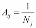

在这一章中，我们描述了一个应用程序，使用整本书中描述的算法和方法来确定电影评论的情感。此外， Scrapy 库将用于通过一个搜索引擎API (Bing搜索引擎)收集不同网站的评论。使用报纸库或遵循HTML格式页面的一些预定义提取规则来提取电影评论的文本和标题。使用朴素贝叶斯分类器对信息量最大的单词(使用X 2 度量)来确定每个评论的情感，其方式与第4章、 Web挖掘技术中的方式相同。此外，使用第4章、 Web挖掘技术中讨论的page rank算法，计算与每个电影查询相关的每个页面的排名完整性。本章将讨论用于构建应用程序的代码，包括Django模型和视图，Scrapy scraper用于从电影评论的网页中收集数据。我们首先给出一个web应用程序的例子，并解释所使用的搜索引擎API以及我们如何将它包含在应用程序中。然后，我们描述如何收集电影评论，将Scrapy库集成到Django中，存储数据的模型，以及管理应用程序的主要命令。本章讨论的所有代码都可以在作者位于https://GitHub . com/ai 2010/machine _ learning _ for _ the _ web/tree/master/chapter _ 8的chapter_8文件夹中的GitHub资源库中找到。
如果用户想知道评论的观点和相关性，他们可以键入电影名称。例如，我们在下面的截图中寻找蝙蝠侠大战超人正义黎明:
应用程序从Bing搜索引擎收集并抓取18条评论，并使用Scrapy库分析他们的情绪(15条正面评论和3条负面评论)。所有数据都存储在Django模型中，准备好用于使用PageRank算法计算每个页面的相关性(页面底部的链接如前面的截图所示)。在这种情况下，使用PageRank算法，我们得到以下结果:
这是与我们的电影评论搜索最相关的页面的列表，在抓取爬虫上设置深度参数2(参考下面的部分以获得进一步的细节)。请注意，要获得良好的页面相关性结果，您必须抓取数千个页面(前面的屏幕截图显示了大约50个抓取页面的结果)。
为了编写应用程序，我们照常启动服务器(参见第6章、Django入门和第7章、电影推荐系统Web应用)和Django中的主app。首先，我们创建一个文件夹来存储我们所有的代码，movie_reviews_analyzer_app，然后我们使用下面的命令初始化Django:
mkdir movie_reviews_analyzer_app cd movie_reviews_analyzer_app django-admin startproject webmining_server python manage.py startapp startapp pages
我们像在第六章Django入门设置部分、第七章的应用设置部分、电影推荐系统Web应用中一样设置.py文件中的设置(当然，在这种情况下名称是webmining_server而不是server_movierecsys)。
情感分析器应用程序将.py文件中的主要视图放在主webmining_server文件夹中，而不是我们之前所做的app (pages)文件夹中(参见第6章、Django入门和第7章、电影推荐系统Web应用程序)，因为这些功能现在更多地指的是服务器的一般功能，而不是特定的应用程序(pages)。
使web服务可操作的最后一个操作是创建一个superuser帐户，并与服务器一起运行:
python manage.py createsuperuser (admin/admin) python manage.py runserver
既然已经解释了应用程序的结构，我们可以从用于收集URL的搜索引擎API开始，更详细地讨论不同的部分。
由于直接从最相关的搜索引擎如Google、Bing、Yahoo和其他搜索引擎抓取违反了他们的服务条款，我们需要从他们的REST API中获取初始评论页面(使用抓取服务如Crawlera、http://crawlera.com/也是可能的)。我们决定使用Bing服务，它允许每月5000次免费查询。
为了做到这一点，我们向微软服务注册，以获得允许搜索所需的密钥。简而言之，我们遵循以下步骤:
https://www.bing.com之后，我们可以编写一个函数来检索尽可能多的与我们的查询相关的URL:
num_reviews = 30
def bing_api(query):
keyBing = API_KEY # get Bing key from: https://datamarket.azure.com/account/keys
credentialBing = 'Basic ' + (':%s' % keyBing).encode('base64')[:-1] # the "-1" is to remove the trailing "\n" which encode adds
searchString = '%27X'+query.replace(" ",'+')+'movie+review%27'
top = 50#maximum allowed by Bing
reviews_urls = []
if num_reviews<top:
offset = 0
url = 'https://api.datamarket.azure.com/Bing/Search/Web?' + \
'Query=%s&$top=%d&$skip=%d&$format=json' % (searchString, num_reviews, offset)
request = urllib2.Request(url)
request.add_header('Authorization', credentialBing)
requestOpener = urllib2.build_opener()
response = requestOpener.open(request)
results = json.load(response)
reviews_urls = [ d['Url'] for d in results['d']['results']]
else:
nqueries = int(float(num_reviews)/top)+1
for i in xrange(nqueries):
offset = top*i
if i==nqueries-1:
top = num_reviews-offset
url = 'https://api.datamarket.azure.com/Bing/Search/Web?' + \
'Query=%s&$top=%d&$skip=%d&$format=json' % (searchString, top, offset)
request = urllib2.Request(url)
request.add_header('Authorization', credentialBing)
requestOpener = urllib2.build_opener()
response = requestOpener.open(request)
else:
top=50
url = 'https://api.datamarket.azure.com/Bing/Search/Web?' + \
'Query=%s&$top=%d&$skip=%d&$format=json' % (searchString, top, offset)
request = urllib2.Request(url)
request.add_header('Authorization', credentialBing)
requestOpener = urllib2.build_opener()
response = requestOpener.open(request)
results = json.load(response)
reviews_urls += [ d['Url'] for d in results['d']['results']]
return reviews_urlsAPI_KEY参数取自微软账户，query是指定电影名称的字符串，num_reviews = 30是从Bing API返回的URL总数。有了包含评论的URL列表，我们现在可以设置一个scraper，使用Scrapy从每个网页中提取标题和评论文本。
Scrapy是一个 Python库，用于从网页中提取内容或抓取链接到给定网页的页面(详见第4章、 Web挖掘技术的 Web爬虫(或蜘蛛)部分)。要安装该库，请在终端中键入以下内容:
sudo pip install Scrapy
将可执行文件安装在bin文件夹中:
sudo easy_install scrapy
从movie_reviews_analyzer_app文件夹，我们如下初始化我们的Scrapy项目:
scrapy startproject scrapy_spider
该命令将在scrapy_spider文件夹中创建以下树:
├── __init__.py ├── items.py ├── pipelines.py ├── settings.py ├── spiders ├── spiders │ ├── __init__.py
pipelines.py和items.py文件管理如何存储和操作抓取的数据，它们将在后面的蜘蛛和集成Django和Scrapy 部分讨论。settings.py文件设置在spiders文件夹中定义的每个蜘蛛(或爬虫)用来操作的参数。在接下来的两节中，我们将描述这个应用程序中使用的主要参数和蜘蛛。
settings.py文件收集了Scrapy项目中每个蜘蛛抓取网页时使用的所有参数。主要参数如下:
DEPTH_LIMIT:跟随初始URL爬行的后续页面的数量。默认值是0，这意味着没有设置限制。LOG_ENABLED:执行默认为真时，允许/拒绝Scrapy登录终端。ITEM_PIPELINES = {'scrapy_spider.pipelines.ReviewPipeline': 1000,}:管道函数的路径，用于操作从每个网页中提取的数据。CONCURRENT_ITEMS = 200:流水线中处理的并发项目数。CONCURRENT_REQUESTS = 5000:Scrapy处理的最大并发请求数。CONCURRENT_REQUESTS_PER_DOMAIN = 3000:Scrapy为每个指定域处理的最大并发请求数。深度越大，刮擦的页面就越多，因此刮擦所需的时间也会增加。为了加速这个过程，可以在最后三个参数上设置较高的值。在这个应用程序(spiders文件夹)中，我们设置了两个爬行器:一个从每个电影评论URL提取数据的抓取器(movie_link_results.py)和一个生成链接到初始电影评论URL的网页图的爬行器(recursive_link_results.py)。
movie_link_results.py上的刮刀外观如下:
from newspaper import Article
from urlparse import urlparse
from scrapy.selector import Selector
from scrapy import Spider
from scrapy.spiders import BaseSpider,CrawlSpider, Rule
from scrapy.http import Request
from scrapy_spider import settings
from scrapy_spider.items import PageItem,SearchItem
unwanted_domains = ['youtube.com','www.youtube.com']
from nltk.corpus import stopwords
stopwords = set(stopwords.words('english'))
def CheckQueryinReview(keywords,title,content):
content_list = map(lambda x:x.lower(),content.split(' '))
title_list = map(lambda x:x.lower(),title.split(' '))
words = content_list+title_list
for k in keywords:
if k in words:
return True
return False
class Search(Spider):
name = 'scrapy_spider_reviews'
def __init__(self,url_list,search_key):#specified by -a
self.search_key = search_key
self.keywords = [w.lower() for w in search_key.split(" ") if w not in stopwords]
self.start_urls =url_list.split(',')
super(Search, self).__init__(url_list)
def start_requests(self):
for url in self.start_urls:
yield Request(url=url, callback=self.parse_site,dont_filter=True)
def parse_site(self, response):
## Get the selector for xpath parsing or from newspaper
def crop_emptyel(arr):
return [u for u in arr if u!=' ']
domain = urlparse(response.url).hostname
a = Article(response.url)
a.download()
a.parse()
title = a.title.encode('ascii','ignore').replace('\n','')
sel = Selector(response)
if title==None:
title = sel.xpath('//title/text()').extract()
if len(title)>0:
title = title[0].encode('utf-8').strip().lower()
content = a.text.encode('ascii','ignore').replace('\n','')
if content == None:
content = 'none'
if len(crop_emptyel(sel.xpath('//div//article//p/text()').extract()))>1:
contents = crop_emptyel(sel.xpath('//div//article//p/text()').extract())
print 'divarticle'
….
elif len(crop_emptyel(sel.xpath('/html/head/meta[@name="description"]/@content').extract()))>0:
contents = crop_emptyel(sel.xpath('/html/head/meta[@name="description"]/@content').extract())
content = ' '.join([c.encode('utf-8') for c in contents]).strip().lower()
#get search item
search_item = SearchItem.django_model.objects.get(term=self.search_key)
#save item
if not PageItem.django_model.objects.filter(url=response.url).exists():
if len(content) > 0:
if CheckQueryinReview(self.keywords,title,content):
if domain not in unwanted_domains:
newpage = PageItem()
newpage['searchterm'] = search_item
newpage['title'] = title
newpage['content'] = content
newpage['url'] = response.url
newpage['depth'] = 0
newpage['review'] = True
#newpage.save()
return newpage
else:
return null
我们可以看到来自scrapy的Spider类被Search类继承，必须定义以下标准方法来覆盖这些标准方法:
__init__:蜘蛛的构造器需要定义start_urls列表，该列表包含要从中提取内容的URL。此外，我们还有自定义变量，如search_key和keywords，它们存储与搜索引擎API上使用的电影名称查询相关的信息。start_requests:该函数在spider被调用时被触发，它声明对start_urls列表中的每个URL做什么；对于每个URL，将调用自定义的parse_site函数(而不是默认的parse函数)。parse_site:从每个URL解析数据是一个自定义函数。为了提取评论的标题及其文本内容，我们使用了报纸库(sudo pip install newspaper)，或者，如果失败，我们使用一些定义好的规则直接解析HTML文件，以避免由于不需要的标签而产生的干扰(每个规则结构都是用sel.xpath命令定义的)。为了达到这个结果，我们选择了一些流行的域名(rottentomatoes、cnn等等)，并确保解析能够从这些网站中提取内容(并非所有的提取规则都显示在前面的代码中，但它们通常可以在GitHub文件中找到)。然后使用相关的废料项目和ReviewPipeline功能将数据存储在页面Django模型中(见下一节)。CheckQueryinReview:这是一个自定义函数，用于检查电影标题(来自查询)是否包含在每个网页的内容或标题中。要运行蜘蛛，我们需要从scrapy_spider(内部)文件夹中键入以下命令:
scrapy crawl scrapy_spider_reviews -a url_list=listname -a search_key=keyname
管道定义了当蜘蛛抓取新页面时要做什么。在前面的例子中，parse_site函数返回一个PageItem对象，它触发下面的管道(pipelines.py):
class ReviewPipeline(object):
def process_item(self, item, spider):
#if spider.name == 'scrapy_spider_reviews':#not working
item.save()
return item
这个类只是保存每个条目(蜘蛛符号中的一个新页面)。
正如我们在概述(上一节)中显示的，在我们存储了从评论的URL开始的所有链接页面之后，使用PageRank算法计算评论的相关性。爬虫recursive_link_results.py执行此操作:
#from scrapy.spider import Spider
from scrapy.selector import Selector
from scrapy.contrib.spiders import CrawlSpider, Rule
from scrapy.linkextractors import LinkExtractor
from scrapy.http import Request
from scrapy_spider.items import PageItem,LinkItem,SearchItem
class Search(CrawlSpider):
name = 'scrapy_spider_recursive'
def __init__(self,url_list,search_id):#specified by -a
#REMARK is allowed_domains is not set then ALL are allowed!!!
self.start_urls = url_list.split(',')
self.search_id = int(search_id)
#allow any link but the ones with different font size(repetitions)
self.rules = (
Rule(LinkExtractor(allow=(),deny=('fontSize=*','infoid=*','SortBy=*', ),unique=True), callback='parse_item', follow=True),
)
super(Search, self).__init__(url_list)
def parse_item(self, response):
sel = Selector(response)
## Get meta info from website
title = sel.xpath('//title/text()').extract()
if len(title)>0:
title = title[0].encode('utf-8')
contents = sel.xpath('/html/head/meta[@name="description"]/@content').extract()
content = ' '.join([c.encode('utf-8') for c in contents]).strip()
fromurl = response.request.headers['Referer']
tourl = response.url
depth = response.request.meta['depth']
#get search item
search_item = SearchItem.django_model.objects.get(id=self.search_id)
#newpage
if not PageItem.django_model.objects.filter(url=tourl).exists():
newpage = PageItem()
newpage['searchterm'] = search_item
newpage['title'] = title
newpage['content'] = content
newpage['url'] = tourl
newpage['depth'] = depth
newpage.save()#cant use pipeline cause the execution can finish here
#get from_id,to_id
from_page = PageItem.django_model.objects.get(url=fromurl)
from_id = from_page.id
to_page = PageItem.django_model.objects.get(url=tourl)
to_id = to_page.id
#newlink
if not LinkItem.django_model.objects.filter(from_id=from_id).filter(to_id=to_id).exists():
newlink = LinkItem()
newlink['searchterm'] = search_item
newlink['from_id'] = from_id
newlink['to_id'] = to_id
newlink.save()
来自scrapy的CrawlSpider类被Search类继承，必须定义以下标准方法来覆盖这些标准方法(对于蜘蛛的情况):
__init__:是类的构造函数。start_urls参数定义了蜘蛛开始爬行的起始URL，直到达到DEPTH_LIMIT值。rules参数设置允许/拒绝抓取的URL的类型(在这种情况下，相同的页面但不同的字体大小被忽略),它定义调用的函数来操作每个检索的页面(parse_item)。此外，还定义了一个定制变量search_id，它需要在其他数据中存储查询的ID。parse_item:这是一个自定义函数，调用它来存储每个检索页面的重要数据。从每个页面中创建一个新的Page模型的Django项(见下一节)，它包含页面的标题和内容(使用xpath HTML解析器)。为了执行PageRank算法，使用相关的Scrapy项将链接到每个页面的页面连接和页面本身保存为Link模型的对象(参见以下章节)。要运行爬虫，我们需要从(internal) scrapy_spider文件夹中键入以下内容:
scrapy crawl scrapy_spider_recursive -a url_list=listname -a search_id=keyname
使用蜘蛛收集的数据需要存储在数据库中。在 Django中，数据库表被称为模型，并在models.py文件中定义(在pages文件夹中)。该文件的内容如下:
from django.db import models
from django.conf import settings
from django.utils.translation import ugettext_lazy as _
class SearchTerm(models.Model):
term = models.CharField(_('search'), max_length=255)
num_reviews = models.IntegerField(null=True,default=0)
#display term on admin panel
def __unicode__(self):
return self.term
class Page(models.Model):
searchterm = models.ForeignKey(SearchTerm, related_name='pages',null=True,blank=True)
url = models.URLField(_('url'), default='', blank=True)
title = models.CharField(_('name'), max_length=255)
depth = models.IntegerField(null=True,default=-1)
html = models.TextField(_('html'),blank=True, default='')
review = models.BooleanField(default=False)
old_rank = models.FloatField(null=True,default=0)
new_rank = models.FloatField(null=True,default=1)
content = models.TextField(_('content'),blank=True, default='')
sentiment = models.IntegerField(null=True,default=100)
class Link(models.Model):
searchterm = models.ForeignKey(SearchTerm, related_name='links',null=True,blank=True)
from_id = models.IntegerField(null=True)
to_id = models.IntegerField(null=True)
在应用程序主页上输入的每个电影标题都存储在SearchTerm模型中，而每个网页的数据都收集在Page模型的一个对象中。除了内容字段(HTML、标题、URL、内容)之外，还记录了评论的情绪和在图形网络中的深度(布尔值还指示网页是电影评论页面还是简单的链接页面)。Link模型存储页面之间的所有图形链接，然后由PageRank算法用来计算评论网页的相关性。注意Page模型和Link模型都通过外键链接到相关的SearchTerm。像往常一样，要将这些模型写成数据库表，我们键入以下命令:
python manage.py makemigrations python manage.py migrate
为了填充这些Django模型，我们需要让Scrapy与Django交互，这是下一节的主题。
为了使路径更容易调用，我们移除了外部的scrapy_spider文件夹，这样在movie_reviews_analyzer_app内部，webmining_server文件夹与scrapy_spider文件夹处于同一层级:
├── db.sqlite3 ├── scrapy.cfg ├── scrapy_spider │ ├── ... │ ├── spiders │ │ ... └── webmining_server
我们将Django路径设置到Scrapy settings.py文件中:
# Setting up django's project full path. import sys sys.path.insert(0, BASE_DIR+'/webmining_server') # Setting up django's settings module name. os.environ['DJANGO_SETTINGS_MODULE'] = 'webmining_server.settings' #import django to load models(otherwise AppRegistryNotReady: Models aren't loaded yet): import django django.setup()
现在我们可以安装库，允许从Scrapy管理Django模型:
sudo pip install scrapy-djangoitem
在items.py文件中，我们将Django模型和Scrapy项目之间的链接编写如下:
from scrapy_djangoitem import DjangoItem
from pages.models import Page,Link,SearchTerm
class SearchItem(DjangoItem):
django_model = SearchTerm
class PageItem(DjangoItem):
django_model = Page
class LinkItem(DjangoItem):
django_model = Link
每个类继承了DjangoItem类，因此用django_model变量声明的原始Django模型被自动链接。Scrapy项目现在已经完成了，所以我们可以继续讨论解释处理Scrapy提取的数据的Django代码和管理应用程序所需的Django命令。
这个应用程序的最终目标是确定电影评论的情绪(积极的或消极的)。为了实现这一点，必须使用一些外部数据来构建情感分类器，，然后将它存储在内存(缓存)中，供每个查询请求使用。这就是下面显示的load_sentimentclassifier.py命令的目的:
import nltk.classify.util, nltk.metrics
from nltk.classify import NaiveBayesClassifier
from nltk.corpus import movie_reviews
from nltk.corpus import stopwords
from nltk.collocations import BigramCollocationFinder
from nltk.metrics import BigramAssocMeasures
from nltk.probability import FreqDist, ConditionalFreqDist
import collections
from django.core.management.base import BaseCommand, CommandError
from optparse import make_option
from django.core.cache import cache
stopwords = set(stopwords.words('english'))
method_selfeatures = 'best_words_features'
class Command(BaseCommand):
option_list = BaseCommand.option_list + (
make_option('-n', '--num_bestwords',
dest='num_bestwords', type='int',
action='store',
help=('number of words with high information')),)
def handle(self, *args, **options):
num_bestwords = options['num_bestwords']
self.bestwords = self.GetHighInformationWordsChi(num_bestwords)
clf = self.train_clf(method_selfeatures)
cache.set('clf',clf)
cache.set('bestwords',self.bestwords)
在文件的开头处，变量method_selfeatures设置了特征选择的方法(在这种情况下，特征是评论中的单词；参见第4章、 Web挖掘技术，了解更多细节)用于训练分类器train_clf。最佳单词(特征)的最大数量由输入参数num_bestwords定义。然后，分类器和最佳特征(bestwords)存储在缓存中，以备应用程序使用(使用cache模块)。选择最佳单词(特征)的分类器和方法如下:
def train_clf(method):
negidxs = movie_reviews.fileids('neg')
posidxs = movie_reviews.fileids('pos')
if method=='stopword_filtered_words_features':
negfeatures = [(stopword_filtered_words_features(movie_reviews.words(fileids=[file])), 'neg') for file in negidxs]
posfeatures = [(stopword_filtered_words_features(movie_reviews.words(fileids=[file])), 'pos') for file in posidxs]
elif method=='best_words_features':
negfeatures = [(best_words_features(movie_reviews.words(fileids=[file])), 'neg') for file in negidxs]
posfeatures = [(best_words_features(movie_reviews.words(fileids=[file])), 'pos') for file in posidxs]
elif method=='best_bigrams_words_features':
negfeatures = [(best_bigrams_words_features(movie_reviews.words(fileids=[file])), 'neg') for file in negidxs]
posfeatures = [(best_bigrams_words_features(movie_reviews.words(fileids=[file])), 'pos') for file in posidxs]
trainfeatures = negfeatures + posfeatures
clf = NaiveBayesClassifier.train(trainfeatures)
return clf
def stopword_filtered_words_features(self,words):
return dict([(word, True) for word in words if word not in stopwords])
#eliminate Low Information Features
def GetHighInformationWordsChi(self,num_bestwords):
word_fd = FreqDist()
label_word_fd = ConditionalFreqDist()
for word in movie_reviews.words(categories=['pos']):
word_fd[word.lower()] +=1
label_word_fd['pos'][word.lower()] +=1
for word in movie_reviews.words(categories=['neg']):
word_fd[word.lower()] +=1
label_word_fd['neg'][word.lower()] +=1
pos_word_count = label_word_fd['pos'].N()
neg_word_count = label_word_fd['neg'].N()
total_word_count = pos_word_count + neg_word_count
word_scores = {}
for word, freq in word_fd.iteritems():
pos_score = BigramAssocMeasures.chi_sq(label_word_fd['pos'][word],
(freq, pos_word_count), total_word_count)
neg_score = BigramAssocMeasures.chi_sq(label_word_fd['neg'][word],
(freq, neg_word_count), total_word_count)
word_scores[word] = pos_score + neg_score
best = sorted(word_scores.iteritems(), key=lambda (w,s): s, reverse=True)[:num_bestwords]
bestwords = set([w for w, s in best])
return bestwords
def best_words_features(self,words):
return dict([(word, True) for word in words if word in self.bestwords])
def best_bigrams_word_features(self,words, measure=BigramAssocMeasures.chi_sq, nbigrams=200):
bigram_finder = BigramCollocationFinder.from_words(words)
bigrams = bigram_finder.nbest(measure, nbigrams)
d = dict([(bigram, True) for bigram in bigrams])
d.update(best_words_features(words))
return d
stopword_filtered_words_features:使用自然语言工具包 ( NLTK )的连词列表删除stopwords，并将剩余的视为相关词best_words_features:使用X2T24】度量(NLTK库)，选择与正面或负面评论相关的最有信息量的词(参见第四章、网络挖掘技术，了解更多细节)best_bigrams_word_features:使用X2T32】度量(NLTK库)从单词集中找到200个最有信息的二元模型(详见第4章、 Web挖掘技术)所选择的分类器是朴素贝叶斯算法(参见第3章、监督机器学习)，标记文本(正面、负面情绪)取自movie_reviews的NLTK.corpus。要安装它，在Python中打开一个终端并从corpus安装movie_reviews:
nltk.download()--> corpora/movie_reviews corpus
由于我们可以指定不同的参数(比如特征选择方法、最佳词的数量等等)，我们可能希望使用不同的值来执行和存储评论的情感。为此需要delete_query命令，如下所示:
from pages.models import Link,Page,SearchTerm
from django.core.management.base import BaseCommand, CommandError
from optparse import make_option
class Command(BaseCommand):
option_list = BaseCommand.option_list + (
make_option('-s', '--searchid',
dest='searchid', type='int',
action='store',
help=('id of the search term to delete')),)
def handle(self, *args, **options):
searchid = options['searchid']
if searchid == None:
print "please specify searchid: python manage.py --searchid=--"
#list
for sobj in SearchTerm.objects.all():
print 'id:',sobj.id," term:",sobj.term
else:
print 'delete...'
search_obj = SearchTerm.objects.get(id=searchid)
pages = search_obj.pages.all()
pages.delete()
links = search_obj.links.all()
links.delete()
search_obj.delete()
如果我们运行命令而没有指定searchid(查询的ID)，那么将会显示所有查询和相关ID的列表。之后，我们可以通过键入以下命令来选择要删除的查询:
python manage.py delete_query --searchid=VALUE
我们可以使用缓存的情感分析模型向用户显示所选电影的在线情感，正如我们在下一节中解释的那样。
本章中解释的大部分代码(命令、Bing搜索引擎、Scrapy和Django模型)在views.py中的函数分析器中使用来驱动应用程序使用概述部分中显示的主页(在将urls.py文件中的URL声明为url(r'^$','webmining_server.views.analyzer')之后)。
def analyzer(request):
context = {}
if request.method == 'POST':
post_data = request.POST
query = post_data.get('query', None)
if query:
return redirect('%s?%s' % (reverse('webmining_server.views.analyzer'),
urllib.urlencode({'q': query})))
elif request.method == 'GET':
get_data = request.GET
query = get_data.get('q')
if not query:
return render_to_response(
'movie_reviews/home.html', RequestContext(request, context))
context['query'] = query
stripped_query = query.strip().lower()
urls = []
if test_mode:
urls = parse_bing_results()
else:
urls = bing_api(stripped_query)
if len(urls)== 0:
return render_to_response(
'movie_reviews/noreviewsfound.html', RequestContext(request, context))
if not SearchTerm.objects.filter(term=stripped_query).exists():
s = SearchTerm(term=stripped_query)
s.save()
try:
#scrape
cmd = 'cd ../scrapy_spider & scrapy crawl scrapy_spider_reviews -a url_list=%s -a search_key=%s' %('\"'+str(','.join(urls[:num_reviews]).encode('utf-8'))+'\"','\"'+str(stripped_query)+'\"')
os.system(cmd)
except:
print 'error!'
s.delete()
else:
#collect the pages already scraped
s = SearchTerm.objects.get(term=stripped_query)
#calc num pages
pages = s.pages.all().filter(review=True)
if len(pages) == 0:
s.delete()
return render_to_response(
'movie_reviews/noreviewsfound.html', RequestContext(request, context))
s.num_reviews = len(pages)
s.save()
context['searchterm_id'] = int(s.id)
#train classifier with nltk
def train_clf(method):
...
def stopword_filtered_words_features(words):
...
#Eliminate Low Information Features
def GetHighInformationWordsChi(num_bestwords):
...
bestwords = cache.get('bestwords')
if bestwords == None:
bestwords = GetHighInformationWordsChi(num_bestwords)
def best_words_features(words):
...
def best_bigrams_words_features(words, measure=BigramAssocMeasures.chi_sq, nbigrams=200):
...
clf = cache.get('clf')
if clf == None:
clf = train_clf(method_selfeatures)
cntpos = 0
cntneg = 0
for p in pages:
words = p.content.split(" ")
feats = best_words_features(words)#bigram_word_features(words)#stopword_filtered_word_feats(words)
#print feats
str_sent = clf.classify(feats)
if str_sent == 'pos':
p.sentiment = 1
cntpos +=1
else:
p.sentiment = -1
cntneg +=1
p.save()
context['reviews_classified'] = len(pages)
context['positive_count'] = cntpos
context['negative_count'] = cntneg
context['classified_information'] = True
return render_to_response(
'movie_reviews/home.html', RequestContext(request, context))
插入的电影标题存储在query变量中，并发送给bing_api函数以收集评论的URL。然后调用Scrapy来抓取URL，以找到评论文本，使用clf分类器模型和从缓存中检索的所选最具信息性的单词(bestwords)来处理评论文本(或者在缓存为空的情况下再次生成相同的模型)。评论的预测情绪计数(positive_counts、negative_counts和reviews_classified)然后被发送回home.html(templates文件夹)页面，该页面使用以下Google饼状图代码:
<h2 align = Center>Movie Reviews Sentiment Analysis</h2>
<div class="row">
<p align = Center><strong>Reviews Classified : {{ reviews_classified }}</strong></p>
<p align = Center><strong>Positive Reviews : {{ positive_count }}</strong></p>
<p align = Center><strong> Negative Reviews : {{ negative_count }}</strong></p>
</div>
<section>
<script type="text/javascript" src="img/jsapi"></script>
<script type="text/javascript">
google.load("visualization", "1", {packages:["corechart"]});
google.setOnLoadCallback(drawChart);
function drawChart() {
var data = google.visualization.arrayToDataTable([
['Sentiment', 'Number'],
['Positive', {{ positive_count }}],
['Negative', {{ negative_count }}]
]);
var options = { title: 'Sentiment Pie Chart'};
var chart = new google.visualization.PieChart(document.getElementById('piechart'));
chart.draw(data, options);
}
</script>
<p align ="Center" id="piechart" style="width: 900px; height: 500px;display: block; margin: 0 auto;text-align: center;" ></p>
</div>函数drawChart调用Google PieChart可视化函数，该函数将数据(正计数和负计数)作为输入来创建饼图。要了解HTML代码如何与Django视图交互的更多细节，请参考HTML网页背后的URL和视图部分的第6章、Django入门。从带有观点计数的结果页面(参见应用程序使用概述部分)，可以使用页面底部的两个链接之一来计算抓取评论的PagerRank相关性。这个操作背后的Django代码将在下一节讨论。
为了对在线评论的重要性进行排名，我们在应用程序中实现了PageRank算法(参见第4章、 Web挖掘技术，在排名:PageRank算法部分)。webmining_server文件夹内pgrank文件夹中的pgrank.py文件实现如下算法:
from pages.models import Page,SearchTerm
num_iterations = 100000
eps=0.0001
D = 0.85
def pgrank(searchid):
s = SearchTerm.objects.get(id=int(searchid))
links = s.links.all()
from_idxs = [i.from_id for i in links ]
# Find the idxs that receive page rank
links_received = []
to_idxs = []
for l in links:
from_id = l.from_id
to_id = l.to_id
if from_id not in from_idxs: continue
if to_id not in from_idxs: continue
links_received.append([from_id,to_id])
if to_id not in to_idxs: to_idxs.append(to_id)
pages = s.pages.all()
prev_ranks = dict()
for node in from_idxs:
ptmp = Page.objects.get(id=node)
prev_ranks[node] = ptmp.old_rank
conv=1.
cnt=0
while conv>eps or cnt<num_iterations:
next_ranks = dict()
total = 0.0
for (node,old_rank) in prev_ranks.items():
total += old_rank
next_ranks[node] = 0.0
#find the outbound links and send the pagerank down to each of them
for (node, old_rank) in prev_ranks.items():
give_idxs = []
for (from_id, to_id) in links_received:
if from_id != node: continue
if to_id not in to_idxs: continue
give_idxs.append(to_id)
if (len(give_idxs) < 1): continue
amount = D*old_rank/len(give_idxs)
for id in give_idxs:
next_ranks[id] += amount
tot = 0
for (node,next_rank) in next_ranks.items():
tot += next_rank
const = (1-D)/ len(next_ranks)
for node in next_ranks:
next_ranks[node] += const
tot = 0
for (node,old_rank) in next_ranks.items():
tot += next_rank
difftot = 0
for (node, old_rank) in prev_ranks.items():
new_rank = next_ranks[node]
diff = abs(old_rank-new_rank)
difftot += diff
conv= difftot/len(prev_ranks)
cnt+=1
prev_ranks = next_ranks
for (id,new_rank) in next_ranks.items():
ptmp = Page.objects.get(id=id)
url = ptmp.url
for (id,new_rank) in next_ranks.items():
ptmp = Page.objects.get(id=id)
ptmp.old_rank = ptmp.new_rank
ptmp.new_rank = new_rank
ptmp.save()
此代码获取与给定的SearchTerm对象相关联的所有链接存储，并在时间 t 实现每页 i 的PageRank分数，其中 P(i) 由递归等式给出:
这里， N 是总页数，(NjT23】是页面 j 的出链接数)如果页面 j 指向I；否则， N 为0。参数 D 是所谓的阻尼因子(在前面的代码中设置为0.85)，它表示遵循转移矩阵 A 给出的转移的概率。方程被迭代，直到满足收敛参数eps或达到最大迭代次数num_iterations。在显示电影评论的观点后，通过点击home.html页面底部的抓取并计算页面排名(可能需要很长时间)或计算页面排名链接来调用该算法。链接链接到views.py中的函数pgrank_view(通过urls.py: url(r'^pg-rank/(?P<pk>\d+)/','webmining_server.views.pgrank_view', name='pgrank_view')中声明的URL):
def pgrank_view(request,pk):
context = {}
get_data = request.GET
scrape = get_data.get('scrape','False')
s = SearchTerm.objects.get(id=pk)
if scrape == 'True':
pages = s.pages.all().filter(review=True)
urls = []
for u in pages:
urls.append(u.url)
#crawl
cmd = 'cd ../scrapy_spider & scrapy crawl scrapy_spider_recursive -a url_list=%s -a search_id=%s' %('\"'+str(','.join(urls[:]).encode('utf-8'))+'\"','\"'+str(pk)+'\"')
os.system(cmd)
links = s.links.all()
if len(links)==0:
context['no_links'] = True
return render_to_response(
'movie_reviews/pg-rank.html', RequestContext(request, context))
#calc pgranks
pgrank(pk)
#load pgranks in descending order of pagerank
pages_ordered = s.pages.all().filter(review=True).order_by('-new_rank')
context['pages'] = pages_ordered
return render_to_response(
'movie_reviews/pg-rank.html', RequestContext(request, context))
这段代码调用爬虫收集所有链接到评论的页面，并使用前面讨论的代码计算PageRank分数。然后，分数会显示在pg-rank.html页面中(按页面排名分数降序排列)，如本章的应用程序使用概述部分所示。因为这个函数可能需要很长时间来处理(抓取数千个页面)，所以编写了命令run_scrapelinks.py来运行Scrapy crawler(作为一个练习，请读者按照自己喜欢的方式阅读或修改脚本)。
作为本章的最后一部分，我们简要描述了模型的一些可能的管理和API端点的实现，以检索应用程序处理的数据。在pages文件夹中，我们可以在admin.py文件中设置两个管理界面来检查SearchTerm和Page模型采集的数据:
from django.contrib import admin
from django_markdown.admin import MarkdownField, AdminMarkdownWidget
from pages.models import SearchTerm,Page,Link
class SearchTermAdmin(admin.ModelAdmin):
formfield_overrides = {MarkdownField: {'widget': AdminMarkdownWidget}}
list_display = ['id', 'term', 'num_reviews']
ordering = ['-id']
class PageAdmin(admin.ModelAdmin):
formfield_overrides = {MarkdownField: {'widget': AdminMarkdownWidget}}
list_display = ['id', 'searchterm', 'url','title','content']
ordering = ['-id','-new_rank']
admin.site.register(SearchTerm,SearchTermAdmin)
admin.site.register(Page,PageAdmin)
admin.site.register(Link)
注意SearchTermAdmin和PageAdmin都显示ID递减的对象(在PageAdmin的情况下显示new_rank)。下面的截图就是一个例子:
注意虽然不是必须的，Link模型也被包含在管理界面(admin.site.register(Link))中。更有趣的是，我们可以设置一个API端点来检索与电影标题相关的情感计数。在pages文件夹内的api.py文件中，我们可以有以下内容:
from rest_framework import views,generics
from rest_framework.permissions import AllowAny
from rest_framework.response import Response
from rest_framework.pagination import PageNumberPagination
from pages.serializers import SearchTermSerializer
from pages.models import SearchTerm,Page
class LargeResultsSetPagination(PageNumberPagination):
page_size = 1000
page_size_query_param = 'page_size'
max_page_size = 10000
class SearchTermsList(generics.ListAPIView):
serializer_class = SearchTermSerializer
permission_classes = (AllowAny,)
pagination_class = LargeResultsSetPagination
def get_queryset(self):
return SearchTerm.objects.all()
class PageCounts(views.APIView):
permission_classes = (AllowAny,)
def get(self,*args, **kwargs):
searchid=self.kwargs['pk']
reviewpages = Page.objects.filter(searchterm=searchid).filter(review=True)
npos = len([p for p in reviewpages if p.sentiment==1])
nneg = len(reviewpages)-npos
return Response({'npos':npos,'nneg':nneg})
PageCounts类将搜索的ID(电影的标题)作为输入，并返回对电影的评论的意见，即正面和负面的计数。要从电影的标题中获取earchTerm的ID，您可以查看管理界面或者使用其他API端点SearchTermsList；这只是返回电影标题列表以及相关的ID。串行器设置在serializers.py文件上:
from pages.models import SearchTerm
from rest_framework import serializers
class SearchTermSerializer(serializers.HyperlinkedModelSerializer):
class Meta:
model = SearchTerm
fields = ('id', 'term')
为了调用这些端点，我们可以再次使用swagger接口(参见第6章、Django入门)或者在终端中使用curl命令来进行这些调用。例如:
curl -X GET localhost:8000/search-list/
{"count":7,"next":null,"previous":null,"results":[{"id":24,"term":"the martian"},{"id":27,"term":"steve jobs"},{"id":29,"term":"suffragette"},{"id":39,"term":"southpaw"},{"id":40,"term":"vacation"},{"id":67,"term":"the revenant"},{"id":68,"term":"batman vs superman dawn of justice"}]}
和
curl -X GET localhost:8000/pages-sentiment/68/
{"nneg":3,"npos":15}